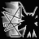
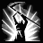

THE NECROMANCER
The Median XL: Ultimative necromancer class can summon a wall of minions, create totems to fight for him and has access to powerful melee and crossbow skills.
BACKGROUND OF THE MEDIAN XL: ULTIMATIVE NECROMANCER
Contrary to popular opinion among the unwashed mashes, necromancers are not power-hungry maniacs. They may in fact be the only ones who know what is truly at stake.
Historically, the first mortal necromancer was the edyrem Mendeln. Sensitised by the presence of the nephalem warrior-mage Uldyssian, he heard the calling of an ancient being from the dawn of Creation - the dragon Trag’Oul, ruler of the Plane of the Dead.
Trag’Oul explained that Sanctuary was not meant to be. A fallen angel and wayward demon, tired of the never-ending war, had created their own kingdom to rule and humanity to serve them. But if either the High Heavens or the Burning Hells found out about the mortal plane, the Eternal War would descend upon it and tear it to pieces.
Trag’Oul and his pupil, the nephalem Rathma, were powerful beings, but not powerful enough. The two had to watch as first the Hells and then the angelic legions discovered Sanctuary. Only the vote of the archangel Tyrael prevented the avenging angels of Heaven from immediately destroying the traitor Inarius' impure creations. Both sides signed a blood pact to keep humanity out of the war and allow them to develop, grow and perhaps make their own choice between good and evil.
Before his final voyage to the Plane of the Dead, Mendeln recorded the events in what would become the necromancer's holy book, the foundation of the cult of Rathma.
The priests of Rathma strive to uphold the balance between the High Heavens and the Burning Hells, for if the balance swings too much, the fate of the mortal plane itself would be in jeopardy. A victory of the forces of chaos would mean hell on earth, whereas if the angelic legions win the Eternal War, their likely next step would be to get rid of the last taint on Creation and annihilate the mortal world.
In times when the forces of Light are strong, this earns them the disdain of the masses. For this reason, the Cult hides underground, only surfacing in times of need...
BASE STATS
Strength : 15
Dexterity : 25
Vitality : 20 (70 life)
Energy : 25 (25 mana)
+20 life, +20 mana per level
Gains +1 life per point into vitality
Gains +6 mana per point into energy
PREFERRED WEAPONS
The Cult of Rathma created a vast arsenal of exotic weapons to augment the magic and combat abilities of their zealots.
The Rathma priests are known as magical experts, not mighty warriors. But with the right mixture of alchemical ingredients, even a necromancer can turn into a slavering scythe-wielding maniac. Death Knights, the warrior branch of the Cult, are commonly seen wielding wicked hexblades or enchanted scythes capable of slicing through steel and demon scales.
Due to the high clergy's ban on crossbow development in the overworld and the low quality of black market weapons, the heavy crossbows and trebuchets of the Dark Rangers are the most powerful in the world. Although they are not known for being exceptionally brave or tough in combat, the arbalists of Rathma use the sheer damaging power of their advanced weapons to great effect.
Summoners and totemcrafters use wands or the ancient Rathman bone staves, which require both hands to wield and offer little protection in combat - but an army of the dead and his voodoo powers are all the protection a necromancer ever needs.
Base cast rate increased by 25% when wielding a staff (reduced number of frames).
Class-specific 1h weapon: Necromancer Dagger
Class-specific 2h weapon: Necromancer Crossbow
Class-specific 2h weapon: Necromancer Staff
Class-specific 2h weapon: Necromancer Scythe (On hit: Mega Impact)
See THIS PAGE for more information about Mega Impact.
PREFERRED ARMOUR
The necromantic skull shields are not the best at blocking arrows or blades, but augment the magical abilities of the wielder. Some say the spirit of the former owner of the skull is bound within the item and slowly drained to power the necromancer's magic.
SKILLS
| Name | Icon | Effect |
|---|---|---|
| TOTEM TREE | ||
| DEATH'S FURY TOTEM | 
| In a particular perversion of druidic magic, this totem sucks the spirits of nature out of the earth and channels them into the claws and blades of the necromancer and his allies. Totem effect: adds fire, cold and lightning damage |
| FROSTCLAW TOTEM | This totem channels the spirits of vengeance of fallen warriors in the areas. The spirits unleash their fury from the cold darkness at the other side of the veil. Totem effect: casts homing waves of ice flame | |
| FIREHEART TOTEM | 
| This totem channels fire spirits from the ambient air, launching an endless barrage of scorching firebolts at the totemcrafter's enemies. Totem effect: casts explosive fireballs at multiple targets |
| HOWLING TOTEM | The spirits in this totem invoke a dark rage in the necromancer and his allies. Many death knights are wary of this totem, for the haunting song of the spirits seems to possess them and, over time, drives them insane. Totem effect: increases physical damage and causes targets to flee | |
| STORMEYE TOTEM | More mechanical than magical, this totem employs a running belt of silk that builds up an electrostatic charge on the sphere, causing sparks to fly when an enemy enters the area. Totem effect: casts a continuous stream of lightning | |
| MINIONS TREE | ||
| EMBALMING | Burial rites were created to preserve the integrity of the deceased's body and empower its soul on its voyage to the plane of the dead. These are properties any warrior would die for. Passive effect: increases mana regen and life of self and minions | |
| SACRIFICES | The ends justify the means. The Cult of Rathma has its own underground prison and regularly raids Zakarumite temples for those times when a spell happens to require fresh blood. Effect: summons prisoners and kills them for corpses | |
| BEND THE SHADOWS | 
| The necromancer links his mind with one of his undead summoned spirits, manifesting at the location of the spirit along with the rest of his army. This crucial ability keeps the undead army on the move and on the offensive. Effect: teleport to target minion, taking other minions with you |
| BANE | If the sight of one of Rathma's undead aberrations does not fill even a demon from hell with dread, this sinister magical enchantment of terror may push the fiend over the edge into quivering insanity. Effect: curses enemies near target minion, lowering physical resist | |
| TALON'S HOLD | Fallen enemies of the Cult may see the error of their ways when they stand before the Dragon God on the plane of the dead. Trag’Oul sometimes grants the gift of unlife to his new converts... Passive effect: slows targets and reanimates the dead as Rathma Priests | |
| SUMMONING TREE | ||
| SUMMON SHADOWS | 
| The ghosts of heroes past take the fight to the forces of hell, their presence at the other side of the veil of time strengthening the faith and fury of their living comrades. Effect: shadow minions with an aura that increases life and regeneration |
| SUMMON RAMPAGOR | 
| The manifestation of demons slain aeons ago and bound by the necromancer, Rampagors are living siege engines with wicked poison blades. Effect: large and tough minions with a poison attack |
| SUMMON LAMIA | The howling spirits of the dead return to exact their revenge on the living. Their chilling death touch weakens the flesh and spirit of the victim. Effect: flying minions with a curse that adds points to damage | |
| SUMMON VEIL KING | After Leoric's defeat, the priests of Rathma explored his ancient crypt and used the bones and lingering magic in a ritual to raise the fearsome skeleton king as a servant to Rathma's church. Effect: single minion that may use a lethal strike and spawns undead fiends | |
| SUMMON VOID ARCHON |  | Created by a suicidally reckless coven during the Mage Clan Wars, these aberrations feed on magic and are very difficult to bind. Their warping aura disrupts the defences of the necromancer's enemies. Effect: single minion with a crippling aura and an area effect attack |
| MALICE TREE | ||
| BONEYARD | Necromancers who wish to address the balance in a more direct way follow in the footsteps of Karybdus. Initiates in his temples learn how to channel the life force of an enemy into a ghost lance, destroying all else around them. Effect: cast a ghost lance that does no damage but explodes on impact | |
| FUNERAL PYRE | The great Karybdus teaches thusly: "The undead are more than mere minions. They are the flint which can set ablaze the all consuming purgatory flames of Rathma." Effect: cast a horde of explosive zombies at target feet | |
| ROTTING FLESH | Harvesting what remains of a minion's soul, the adepts of Malice are able to deliver it into a final death with a colossal release of energy manifesting itself as a venomous fog. Effect: harvest a minion's spirit to create a choking cloud | |
| NIGHTWALKER | 
| Adepts of the mad balance keeper, who have mastered the manipulation of the spiritual energies of the mortal realm, are able to glimpse strands of the Great Cycle of Balance itself - enhancing their black arts. Passive effect: increases damage of malice spells and totem defense |
| PESTILENCE | The most devoted of the Rathman Archpriests gain the secret knowledge enabling them to wield the breath of the great dragon, Trag’Oul himself, in Sanctuary. Passive effect: summon a vile storm of toxic wrath | |
| MELEEs TREE | ||
| MASSACRE |  | The right alchemical mixture can turn even a frail priest of Rathma into a fearsome warrior, provided he does not mind occasionally waking up in an orphanage in a pool of blood with the militia banging on the door. Effect: multiple rapid attacks |
| ANGEL OF DEATH | 
| The death knight takes flight on black wings of fury and descends upon his cowering victims, cleaving them in half with a devastating swing of his scythe or hexblade. Effect: leap attack that adds damage and inflicts lethal poison |
| FAMINE | Rathma's death knights are all but immortal on the battlefield. It is whispered among their frightened adversaries that they are so hard to kill because they are in fact already dead. Passive effect: increases damage and grants life steal | |
| PARASITE | If you admire Ashaera's wizardesses and the Rathma cult's finely crafted war scythes, you do not want to know what both are used for out of combat. In both cases, it often leads to infection with a flesh eating parasite. Effect: melee attack that unleashes a worm that bounces between targets | |
| DEATHLORD | Wearing heavy full plate mail is a privilege reserved for the strongest fighters of the
realm. The Rathma priests found a slightly different solution: an enchanted set of armour animated by the spirit of an ancient warrior. Effect: morph into a death knight | |
| CROSSBOW TREE | ||
| BUCKSHOT | 
| This popular crossbow retrofit uses exploding oil to launch a number of jagged metal shards. Its effective range is limited, but its effect on unprotected flesh is impressive. Effect: fires a short ranged crossbow blast |
| FLAMETAIL SHOT | 
| Rathma's alchemists harness the explosive power of their concoctions to propel a crossbow bolt under its own power, slamming its way through the enemy ranks. Effect: fires a rocket that pierces and stuns enemies |
| DRAGONFIRE OIL | 
| This secret mixture of sticky gasoline and distilled voodoo can be applied to any weapon to set it ablaze and torch the unfortunate target. Passive effect: adds fire damage to your attacks |
| FRAGMENTATION SHOT | Most mages are familiar with exploding potions, usually not on purpose. The expert alchemist uses his crossbow to project a glass vial filled with magical oil and shrapnel over a large distance. Effect: fires a potion that explodes on the ground | |
| VOODOO SHOT | Voodoo magic was long known to the Umbaru tribes in Kehjistan, the only other humans mad enough to live in the deadly jungle. Shooting a voodoo doll of a shadow minion with a crossbow can have interesting effects. Effect: target minion spits out a barrage of homing crossbow bolts | |
UBERSKILLS
You may choose a single uberskill at character level 90 and above.
| Name | Icon | Effect |
|---|---|---|
| SUMMON JINN | 
| Originating from before the dawn of mankind, the Jinni were Zakarum's failed experiment to create a race of servants from elemental fire. They rebelled and were banished to the Plane of the Dead. Effect: summons fiery spirits that increase your spellpower |
| RATHMA'S CHOSEN | The prophet of the Dragon God may choose a particularly brave and fierce undead spirit as his avatar. The chosen one of Rathma is timeless, immortal and almighty. Effect: target minion is invulnerable and deals massive magic damage | |
| DEATH WARD | 
| Runic tattoos and enchantments protect the mage with a permanent warding spell that turns aside weapons or causes them to pass through harmlessly as if he were a ghost. Passive effect: increases defence and grants a chance to avoid damage |
ENNEAD SKILL
After completing the Ennead Challenge and keeping the Class Charm in the inventory while at character level 90 and above, you can invest points in this skill.
See THIS PAGE for more information about the Ennead Challenge.
| Name | Icon | Effect |
|---|---|---|
| BLACK MASS | 
| The dragon god of death Trag’Oul takes his faithful under his wings, turning aside blades and arrows.
This powerful spell requires total concentration and is easily broken when the caster is disturbed. Effect: press and hold to protect self and nearby minions |
BLACK ROAD SKILL
After completing the Black Road Challenge and keeping the Class Charm in the inventory while at character level 90 and above, you can invest points in this skill.
See THIS PAGE for more information about the Black Road Challenge.
| Name | Icon | Effect |
|---|---|---|
| GRAVEYARD | 
| The deathspeaker establishes an aura powered by the emanations of a demon's wicked thoughts, conjuring torture equipment and striking the demon with the punishments it desires most to inflict upon humanity. Effect: when activated, periodically shoots deadly spiked balls at enemies |
INNATE SKILL
Necromancers start with the following skill in their icon list.
| Name | Icon | Effect |
|---|---|---|
| BURNING VEIL | 
| Employing his mastery of the planes, the necromancer opens a window to the plane of perdition, giving those who come into contact with the portal a glimpse of hellish hatred. Effect: wall of rage that increases damage of allies that cross it |